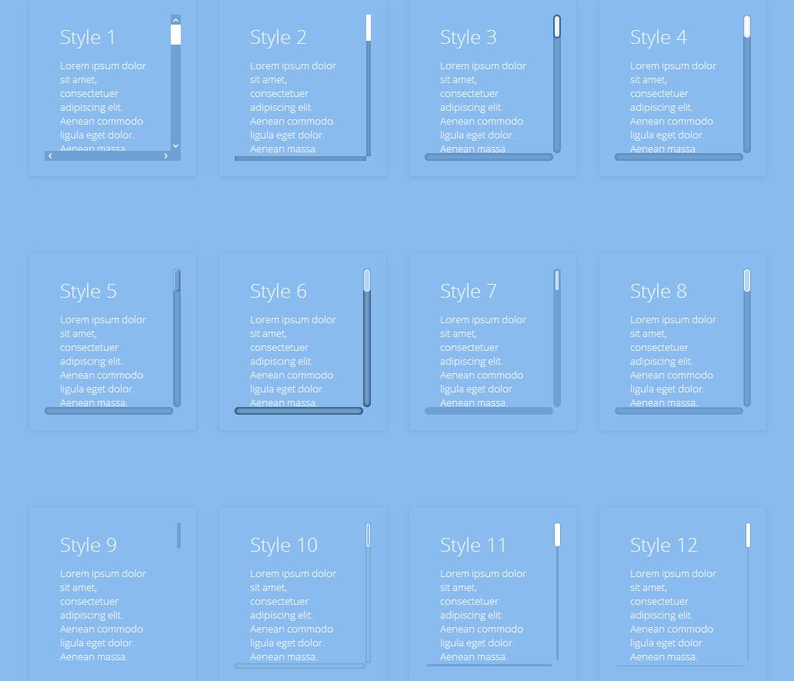

Tùy chỉnh Scrollbar
Scrollbar là một thành phần hay gặp. Tuy nhiên, mỗi trình duyệt lại hiển thị nó khác nhau. Làm thế nào để nó hiển thị đẹp và giống nhau ở các trình duyệt khác nhau?

IE có các thuộc tính CSS riêng để chúng ta có thể đổi màu scrollbar. WebKit (Chrome, Safari) thì có các thuộc tính CSS về thành phần và các trạng thái của scrollbar, giúp chúng ta có thể điều chỉnh nhiều hơn. Firefox thì không có thuộc tính CSS gì liên quan đến scrollbar.
Để làm cross-browser, chúng ta phải chọn giải pháp là dùng JS. Các thư viện JS sẽ tạo một cái khung (các thẻ div), bắt sự kiện của chuột để mô phỏng lại điều khiển giống như scrollbar.
Có các thư viện:
Tập trung vào jScrollPane.
WebKit CSS
Perfect scrollbar
Slim scroll
jScrollPane
Thư viện JS chuyển vùng div ban đầu của chúng ta về cấu trúc sau:
- jspScrollable (thẻ div ban đầu)
- jspContainer
- jspPane (nội dung của thẻ div ban đầu giờ sẽ chuyển vào đây)
- jspVerticalBar
- jspCapTop
- jspTrack
- jspDrag
- jspCapBottom
Khi nội dung trong thẻ div ngắn sẽ không hiển thị scrollbar.
Khi chúng ta resize lại trình duyệt, cần điều chỉnh lại cho chính xác.
Khi nội dung thay đổi (ngắn hơn hay dài hơn) thì chúng ta cũng cần điều chỉnh lại.
Một scrollbar đẹp, độc đáo:
http://dotroe.com/subpage.html
Malihu custom scrollbar
Các ví dụ khác:
http://manos.malihu.gr/repository/custom-scrollbar/demo/examples/complete_examples.html